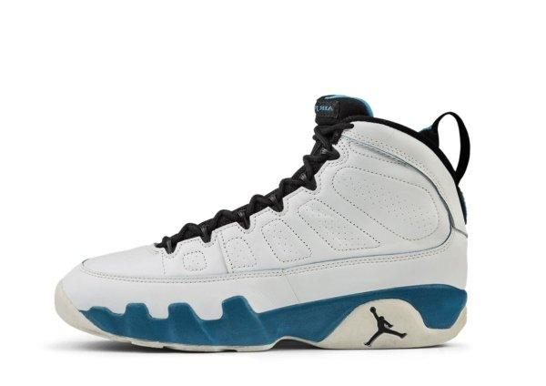

História do Air Jordan 9:
O Air Jordan 9 foi lançado em 1994, em um momento marcante: Michael Jordan havia se aposentado temporariamente do basquete para seguir uma breve carreira no beisebol. Por isso, o AJ9 foi o primeiro modelo da linha a ser lançado sem MJ em quadra.
Apesar disso, o tênis manteve o alto padrão de design e inovação. Criado por Tinker Hatfield, o AJ9 foi inspirado na ideia de que Jordan era um ícone global, com elementos no design que representam essa influência mundial — como inscrições em diferentes línguas na sola, simbolizando valores como esporte, independência e dedicação.
Curiosamente, Jordan nunca jogou uma partida oficial da NBA com o AJ9, mas o modelo foi usado em seu uniforme de beisebol (com travas) e também apareceu em sua estátua em frente ao United Center.
Mesmo sem MJ nas quadras, o Air Jordan 9 ajudou a manter viva a marca e o legado da Jordan Brand durante sua pausa.